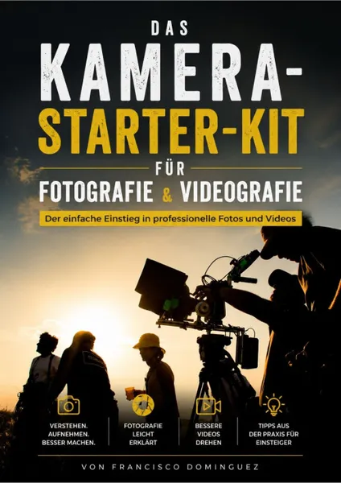
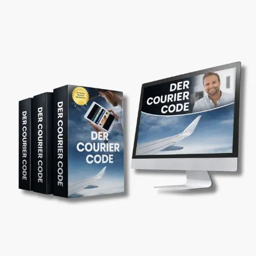

Das Kamera-Starter-Kit für Fotografie und Videografie.
Produktprofil · Marktplatz-Daten 2026-10-13 · Verkaufsseiten-Recherche 2026-10-13 · Kategorien: Travel & Culture, Hobby & Craft, Photography & Film
- Das Kamera-Starter-Kit für Fotografie und Videografie. ist ein/e E-Book in Travel & Culture und Hobby & Craft, vertrieben über den Digistore24-Marktplatz von Anbieter dop09e6a, gelistet seit 2026-07-18.
- Listenpreis $26.02; Digistore24 meldet — Checkout-Konversion, — Stornierungsquote und 50 % Affiliate-Provision.
- Verdienst pro Verkauf (Affiliate): $13.01 (Anbieter-seitige Statistik, keine Prognose).
Interesse an Das Kamera-Starter-Kit für Fotografie und Videografie.? Aktueller Preis, Boni und Garantiebedingungen finden Sie auf der offiziellen Seite des Anbieters:
Offizielle Verkaufsseite ansehen
Affiliate-Link (Werbung) — wir verdienen ggf. eine Provision, ohne Mehrkosten für Sie.

Marktplatz-Daten
| Produkttyp | E-Book |
|---|---|
| Preis | $26.02 (Single payment) |
| Affiliate-Provision | 50 % |
| Garantie/Rückgabe | Laut Verkaufsseite des Anbieters — vor dem Kauf auf der offiziellen Seite prüfen |
| Anbieter | dop09e6a (gelistet seit 2026-07-18) |
| Marktplatz-Statistiken* | Checkout-Konversion — · Stornoquote — · Verdienst/Verkauf $13.01 |
* Anbieter-seitige Statistiken von Digistore24; sie hängen von der Traffic-Qualität ab und sind keine Prognose.
Marktplatz-Beschreibung des Anbieters
Das Kamera-Starter-Kit für Fotografie & Videografie Ein hochwertiges Praxisbuch für Einsteiger mit attraktiver 50 %-Provision Warum lohnt es sich, dieses Produkt zu bewerben? Fotografie und Videografie gehören zu den beliebtesten Hobbys und wachsen durch Plattformen wie YouTube, Instagram, TikTok und Pinterest kontinuierlich. Viele Menschen kaufen eine Kamera, wissen jedoch nicht, wie sie ihr Potenzial richtig nutzen können. Das Kamera-Starter-Kit schließt genau diese Lücke. Das Buch vermittelt Anfängern Schritt für Schritt die Grundlagen der Fotografie und Videografie auf verständliche und praxisnahe Weise. Statt komplizierter Fachbegriffe erhalten die Leser sofort umsetzbare Tipps, zahlreiche Illustrationen und leicht verständliche Erklärungen. Die Zielgruppe Dieses Produkt richtet sich an: Einsteiger in die Fotografie Einsteiger in die Videografie Besitzer einer Sony-, Canon-, Nikon-, Fujifilm- oder Panasonic-Kamera Content Creator YouTuber Reiseblogger Influencer Hobbyfotografen Videobegeisterte Eltern, die bessere Familienfotos und Videos aufnehmen möchten Diese Zielgruppe wächst jedes Jahr und sucht aktiv nach verständlichen Lernmaterialien. Was macht dieses Buch besonders? Im Gegensatz zu vielen technischen Handbüchern erklärt dieses Buch nicht nur die Kamera, sondern vermittelt das fotografische und filmische Denken eines professionellen Kameramanns. Die Leser lernen unter anderem: die richtige Kamera auszuwählen, das Belichtungsdreieck sicher anzuwenden, Objektive richtig einzusetzen, Licht gezielt zu nutzen, Bilder spannend zu komponieren, professionelle Kamerabewegungen umzusetzen, typische Anfängerfehler zu vermeiden, bessere Fotos und Videos mit jeder Kamera zu erstellen. Über den Autor Der Autor Francisco Dominguez ist professioneller Kameramann mit über zwanzig Jahren Berufserfahrung. Er studierte an der Deutschen Film- und Fernsehakademie Berlin (dffb) und arbeitete für Kino-, Fernseh- und Dokumentarfilmproduktionen sowie Nachrichtensender. Sein Ziel ist es, professionelles Wissen verständlich und praxisnah an Einsteiger weiterzugeben. Begleitmaterialien Zusätzlich zum Buch erhalten Käufer hilfreiche Unterlagen für den direkten Einsatz: ✔ Kamera-Kaufcheckliste ✔ Dreh-Checkliste ✔ Belichtungs-Spickzettel ✔ Praxis-Übungen ✔ 30-Tage-Foto- und Video-Challenge ✔ Zahlreiche professionelle Grafiken und Illustrationen Weitere Bonusmaterialien werden regelmäßig ergänzt. Vorteile für Affiliates 50 % Affiliate-Provision Hohe Nachfrage im Bereich Fotografie & Videografie Zeitloses Thema mit dauerhaftem Interesse Professionelle Verkaufsseite Verständliches Produkt mit hoher Zielgruppenrelevanz Regelmäßige Produktweiterentwicklung Geplante Buchreihe mit weiteren Produkten Marketingmaterial für Partner Zur Unterstützung deiner Werbung stellen wir nach und nach professionelles Werbematerial zur Verfügung: Pinterest-Pins Social-Media-Grafiken Produktbilder Buchcover Werbetexte Banner E-Mail-Vorlagen So kannst du das Produkt schnell und einfach bewerben. Unser Ziel Wir möchten eine der umfangreichsten deutschsprachigen Lernplattformen für Einsteiger in Fotografie und Videografie aufbauen. Das Kamera-Starter-Kit bildet den Auftakt einer wachsenden Produktreihe mit weiteren Büchern, Checklisten und Videokursen. Wer dieses Produkt heute bewirbt, begleitet den Aufbau einer langfristigen Marke und profitiert von zukünftigen Erweiterungen.
Von der Verkaufsseite des Anbieters
Seitentitel: Das Kamera-Starter-Kit • Fotos und Videos E-Book
Meta-Beschreibung: Mach endlich Fotos und Videos, auf die Du stolz bist. 📷 Lerne Deine Kamera endlich richtig zu bedienen. 🎥 Nimm flüssige und professionell wirkende Videos auf. ✨ Verstehe Blende, ISO und Verschlusszeit ohne komplizierte Fachbegriffe.
Abschnitts-Überschriften
- Das Kamera-Starter-Kit: Der ultimative Leitfaden für Fotografie und Videografie
Einstiegstext
Die Wahrheit ist: Nicht Deine Kamera ist das Problem. Sondern niemand hat Dir bisher erklärt, wie Du sie richtig nutzt.
Das Kamera-Starter-Kit vermittelt Dir Schritt für Schritt genau das Wissen, das ich selbst über viele Jahre als Kameramann für Kino, Fernsehen und Werbeproduktionen gesammelt habe.
Ohne unnötige Theorie. Ohne komplizierte Fachsprache. Sondern so, dass Du sofort bessere Ergebnisse erzielst.
Dieses Buch verbindet Fotografie und Videografie in einem einzigen, leicht verständlichen Leitfaden.
Fragen, die die Verkaufsseite beantwortet
- Für wen ist dieses Buch?
- Warum dieses Buch anders ist?
Recherche-Methode: rohes HTML · 519 Wörter · Qualität: medium · recherchiert am 2026-10-13. Vollständige Recherche-Datei (MD) ↗
Wie Produkte dieser Art geliefert werden
Allgemeiner Hinweis zu diesem Produkttyp (keine anbieterspezifische Anleitung): E-Books auf Digistore24 werden als digitaler Download geliefert (meist PDF/EPUB): direkt nach dem Checkout erhalten Sie einen Downloadlink oder Mitgliederzugang und können auf jedem Gerät lesen. Für die genaue Anwendung von Das Kamera-Starter-Kit für Fotografie und Videografie. sind die offizielle Verkaufsseite und die enthaltenen Materialien maßgeblich.
Gut zu wissen
- Keine Garantie-Formulierung in unserer Recherche gefunden — bestätigen Sie das Rückgabefenster auf der offiziellen Seite, bevor Sie kaufen.
- Marktplatz-Zahlen (Preis, Provision, Konversion, Stornoquote) — Quelle: offizielle Digistore24-Marktplatz-API (Affiliate-Sicht), Stand 2026-10-13. Gegenprüfung: Marktplatz-Suche nach Produkt-ID 710700.
- Verkaufsseiten-Zitate — Quelle: https://fotofilmbeginner.com/das-kamera-starter-kit, abgerufen 2026-10-13 (Methode: rohes HTML). Verify: offizielle Seite öffnen.
- Garantie / Rückgabe — vom Anbieter festgelegt; vor dem Kauf auf der Verkaufsseite bestätigen.
- Nicht von uns geprüft: Produktqualität, Ergebnisse, Testimonials — kein Praxistest für dieses Listing durchgeführt.
Häufige Fragen zu Das Kamera-Starter-Kit für Fotografie und Videografie.
Antworten aus dem Marktplatz-Snapshot (2026-10-13) und der Verkaufsseiten-Recherche (2026-10-13); Anbieteraussagen sind inline gekennzeichnet.
Was ist Das Kamera-Starter-Kit für Fotografie und Videografie.?
Das Kamera-Starter-Kit für Fotografie und Videografie. ist ein Angebot des Typs „E-Book" im Digistore24-Marktplatz, Anbieter: dop09e6a, gelistet seit 2026-07-18. Eingepflegt unter Reisen & Kultur und Hobby & Handwerk. Digistore24 wickelt Checkout, Lieferung und Rückgaben ab.
Wie viel kostet Das Kamera-Starter-Kit für Fotografie und Videografie.?
Der Digistore24-Marktplatz listet es für $26.02 (single payment). Preise legt der Anbieter fest und können sich ändern — der Marktplatz-Eintrag oben zeigt den Schnappschuss; die offizielle Verkaufsseite zeigt den aktuellen Preis.
Gibt es eine Geld-zurück-Garantie für Das Kamera-Starter-Kit für Fotografie und Videografie.?
Unsere Verkaufsseiten-Recherche hat keine explizite Garantie-Formulierung gefunden. Viele Digistore24-Produkte bieten 60 Tage Geld-zurück, aber das legt jeder Anbieter selbst fest — bestätigen Sie es auf der offiziellen Verkaufsseite, bevor Sie kaufen.
Ist Das Kamera-Starter-Kit für Fotografie und Videografie. seriös?
Wir bewerten keine Seriosität — wir veröffentlichen überprüfbare Zahlen: Anbieter dop09e6a (gelistet seit 2026-07-18), Checkout-Konversion —, Stornoquote —, Affiliate-Verdienst/Verkauf $13.01 (alles Anbieter-seitige Marktplatz-Statistiken). Lesen Sie unsere 6-Punkte-Bewertungsmethode und entscheiden Sie anhand der Zahlen — oder diskutieren Sie Das Kamera-Starter-Kit für Fotografie und Videografie. auf GitHub.
Wo kann ich Das Kamera-Starter-Kit für Fotografie und Videografie. sicher kaufen?
Nur über die offizielle Verkaufsseite, die auf dieser Seite verlinkt ist (Checkout und Rückgaben laufen über Digistore24). Prüfen Sie dort Preis und Garantie vor der Bestellung. Der Link ist ein Affiliate-Link — der Kauf unterstützt diese Website ohne Mehrkosten für Sie.
Wie erhalte ich Das Kamera-Starter-Kit für Fotografie und Videografie. nach der Zahlung?
Der Checkout läuft über Digistore24: Nach der Zahlung erhalten Sie Ihren Zugang oder Download per E-Mail und in Ihrem Digistore24-Kundenkonto. Lieferdetails für diesen Produkttyp: E-Books auf Digistore24 werden als digitaler Download geliefert (meist PDF/EPUB): direkt nach dem Checkout erhalten Sie einen Downloadlink oder Mitgliederzugang und können auf jedem Gerät lesen. Bei Problemen kann der Digistore24-Käufersupport Ihre Bestellung wiederherstellen.
Alle 50 Käuferfragen zu Reisen & Kultur — das komplette Kategorie-FAQ.
Das Kamera-Starter-Kit für Fotografie und Videografie. auf Reddit diskutieren
In Community-Threads vergleichen echte Käufer Erfahrungen. Wir verlinken Communities, keine einzelnen Posts — Threads verschwinden, Subreddits bleiben:
- r/travel — deutschsprachige Community mit Diskussionen zu travel & culture.
- Reddit-Suche nach „Das Kamera-Starter-Kit für Fotografie und Videografie." — Live-Ergebnisse, von uns nicht beeinflusst.
- Top-„Erfahrungs"-Treffer dieses Jahr — selbst nach Aktualität filtern.
Passendes auf Amazon.de
Physische Produkte und Zubehör, die häufig zusammen mit Das Kamera-Starter-Kit für Fotografie und Videografie. gekauft werden:
- Kamera Zubehör auf Amazon.de — Top-Ergebnisse, Amazon-Ranking.
- Bestseller: Kamera Zubehör — live Liste von Amazon, von uns nicht kuratiert.
Werbung: Als Amazon-Partner verdient DigistorePicks DE an qualifizierten Käufen (Partner-tag adminstorede-21). Amazon setzt eigene Preise und Provisionen (niedrige einstellige Prozente — weit unter den 30–75% der Digistore24-Anbieter). Amazon ist ein Convenience-Angebot für Sachprodukte, kein Ersatz für das digitale Produkt oben.
Ähnliche Angebote in Reisen & Kultur

Hohe Provision : 50 % Provision auf jede Empfehlung! Statt Holzklasse endlich Business oder First Class Flüge zu Economy Preisen ✈️ Bezahle Business + First Cla
![Goodbye 9 to 5: Digitaler Nomade werden PREMIUM [Onlinekurs]](../assets/products/32101.webp)
Empfehle unser einzigartiges Produkt für alle angehenden digitalen Nomaden mit einer hohen Kaufrate. Deine Vorteile: Exzellente Conversions : Profitiere von uns
![Goodbye 9 to 5:Digitaler Nomade werden STANDARD [Onlinekurs]](../assets/products/32102.webp)
Empfehle unser einzigartiges Produkt für alle angehenden digitalen Nomaden mit einer hohen Kaufrate. Deine Vorteile: Exzellente Conversions : Profitiere von uns

Die ganzheitliche Lösung gegen Flugangst – entwickelt von einem Piloten. Der FlyCalm Ultimate Kurs ist die umfassendste Online-Lösung gegen Flugangst . Er richt
Das Kamera-Starter-Kit für Fotografie und Videografie. ist auch gelistet in
Hobby & Handwerk (181 Produkte) · Fotografie & Film (50 Produkte)
Ähnliche Preislage in Reisen & Kultur
eBook von Tobias Gensicke, rund 280 Seiten, EPUB und PDF, Rechtsstand 29. September 2026. Für Deutsche, Österreicher und Schweizer, überwiegend ab 50, die dauer
Träumst Du davon, am kristallklaren Meer zu leben, in einer bezaubernden mediterranen Umgebung zu arbeiten und das ganze Jahr über die Sonne zu genießen? Kroati
NIE MEHR PROBLEME Wie die 5-Flaggen-Strategie Ihnen ein FREIES Leben sichert ohne Sorgen ohne Schulden ohne Stress in Wohlstand in Freiheit in Frieden Möchten S

Wie du als Onboard-Kurier um die Welt reist – und dabei Geld verdienst! Lerne, wie du als Onboard-Kurier um die Welt reist und für deine Flüge bezahlt wirst. In
Ähnliche Suchanfragen
Wo Sie es sich ansehen können
Wo Sie es sich ansehen können
Aktuelle Preise, Garantie und Boni finden Sie auf der offiziellen Verkaufsseite:
Offizielle Verkaufsseite ansehen
Das ist ein Affiliate-Link (Werbung) — kaufen Sie darüber, verdienen wir ggf. eine Provision, ohne Mehrkosten für Sie.
Quellen & weiterführende Informationen
- Offizielle Verkaufsseite (aktueller Preis, Garantie, Boni): fotofilmbeginner.com/das-kamera-starter-kit (Affiliate-Link)
- Öffentliche Digistore24-Produktseite: digistore24.com/product/710700
- Vollständige Recherche-Datei (Markdown, versioniert): content/products/57589-das-kamera-starter-kit-f-r-fotografie-und-videografie.md
- Marktplatz-Kategorie: Reisen & Kultur
Wie wir Produkte wie Das Kamera-Starter-Kit für Fotografie und Videografie. bewerten
Sechs Prüfungen, ausschließlich mit offiziellen Marktplatz-Zahlen. Die vollständige Bewertungsmethode lesen · unsere Recherche-Standards & Kennzeichnung.
Fragen oder eigene Erfahrungen mit Das Kamera-Starter-Kit für Fotografie und Videografie.?
Praxis-Tests veröffentlichen wir erst, nachdem wir ein Produkt selbst gekauft haben — aber Ihre Erfahrung hilft anderen Lesern: Diskussion zu Das Kamera-Starter-Kit für Fotografie und Videografie. auf GitHub starten/verfolgen. Falsche Zahl gefunden? Korrektur melden — jede Seite zeigt ihre Datenstände, Korrekturen gelten für die ganze Website.